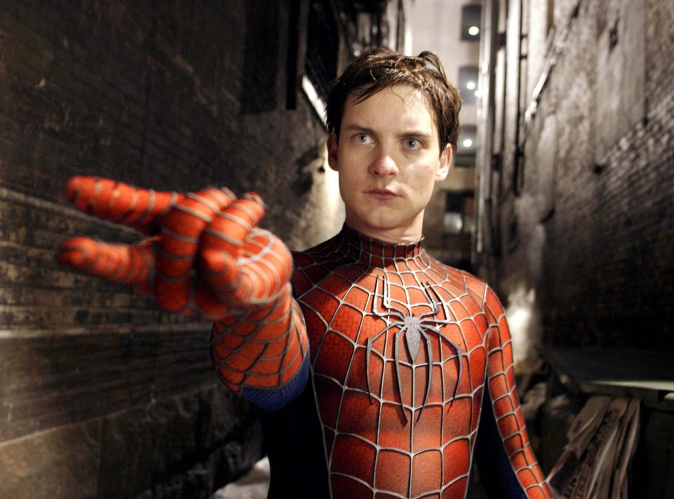
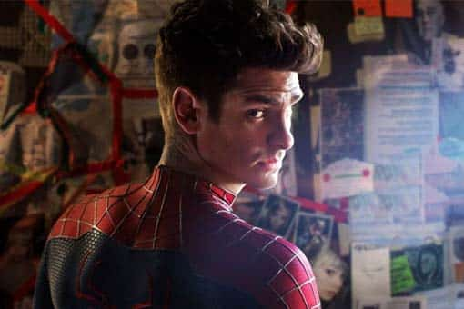
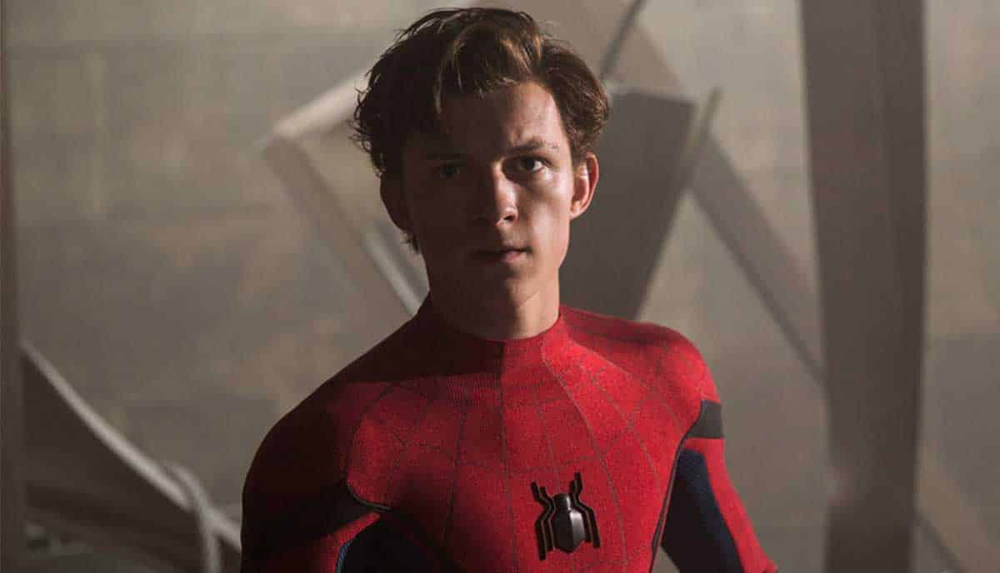

¿Quien es el mejor Spiderman del cine?.
Hoy hablaremos del tema que siempre está en discusión total de mi personaje favorito de todo Marvel y que me ha dejado muchas enseñanzas “Spiderman”. Desde que el trepa muros pudo regresar a Marvel y desde que empezó a ver mas adaptaciones del personaje al cine…o…si hoy discutiremos sobre quien es el mejor Spiderman que nos ha entregado pasando con el de la trilogía de Sam Raimi, hasta el más reciente que forma parte del Universo Cinematográfico de Marvel…analizaremos a cada uno…sin nada más con el momento descubramos quien es el mejor Spiderman del cine.

Tobey Maguire
Tobey Maguire fue el primero en encarnar al personaje en la pantalla grande bajo la dirección de Sam Raimi, que venía de hacer películas de terror como The Evil Dead (1981) y Darkman (1990) (otra película de superhéroe,aunque no tan conocido) lo cierto es que la trilogía de Sam Raimi es de lo mejor que nos ha traído al cine este director.
Esta trilogia puede ser considera la mejor solo por la nostalgia que esta provoca,pero ¿Realmente solo por eso es la mejor? pues no creo que sea solo por eso, la verdad es que hay muchos puntos a favor de la trilogía de los años 2000, como lo son su historia de origen completamente sacada de los comics más clásicos. Lo humano que Peter Parker/Spiderman puede llegar a ser cuando su mundo se derrumba, un chico que tiene que “verdaderamente” ganarse la vida repartiendo pizzas y tomando fotografías mientras trata de conquistar a la mujer que ama y al mismo tiempo luchar contra el crimen.
Un Peter más humano, con el que todos nos llegamos a identificar y que sin duda lo hace una versión especial, sin dejar de lado la frase mas importante del trepa muros en toda su historia, “Un gran poder conllevar una gran responsabilidad”.
Cuando hablamos de elenco y de vestuario, tengo que decir que acertaron en estos aspectos, porque realmente Tobey Maguire si parecía un completo nerd con esos lentes rotos con los que cargaba y sobre el resto de los personajes creo que acertaron correctamente, aunque creo que con el Eddie Brock/ Venom de Topher Grace no fue la mejor elección.
La verdad tengo que decir que respeto la trilogía de Sam Raimi, la admiro y pienso que es de lo mejor que nos ha traído el cine de superhéroes y del cine en general. Tengo que confesar que todavía cuando veo Spiderman 2 se me pone la piel chinita jajaja enserio, y aquí les dejo la mejor frase de toda la saga:
"Todo el mundo ama a un héroe. La gente hace fila por ellos, los celebra, grita sus nombres. Y años más tarde, contarán cómo estuvieron bajo la lluvia durante horas solo para echar un vistazo al que les enseñó a soportar un segundo más. Creo que hay un héroe en todos nosotros que nos mantiene honestos, nos fortalece, nos hace nobles y, finalmente, nos permite morir con orgullo, aunque a veces tengamos que ser firmes y renunciar a lo que más deseamos. Incluso nuestros sueños."
{kind=link}
Andrew Garfield
Ahora vamos con el mas guapo de la lista, mi amado y querido Andrew Garfield.
Luego que la trilogía de Sam Raimi había terminado y posteriormente cancelada, Sony tenía que traer una nueva entrega del chico arácnido pronto, porque si no regresaría a Marvel completamente. Sony decidió darle el proyecto a mi compa Marc Webb 500 días con ella (2009) y un Don excepcional (2017) , una saga de películas que se llamo “The Amazing Spiderman” o como le pusieron aquí en mi rancho “El sorprendente hombre araña”, una de películas que no fue muy del agrado de algunos fans y también no fue el taquillazo que Sony esperaba, recaudando un poco mas de 700 millones de dólares (convirtiéndolas en las dos películas menos taquilleras del personaje).
Pero a quien le importan los números la verdad es que esta versión del arácnido de la mano de Andrew Garfield es de lo mejor, una versión con la que te sientes identificado y que amaras desde la primera vez que lo vez, tanto dentro y fuera de la cámara, el actor británico mostraba su amor por el personaje (incluso llevando una fotografía de el cuándo tenía 4 años vestido del superhéroe). Cuando tenía la oportunidad lograba asistir a eventos de caridad vestido como el personaje, y dedicando horas a sus pequeños fans.
En cuanto su versión del trepa muros es claro es que lo mejor, Andrew Garfield era de lo mejor se comportaba como un adolescente dentro y fuera de la cámara , su química con Emma Stone era hermoso (al grado de mantener una relacion fuera de la pantalla) y que decir de su versión de Peter Parker, Garfield logro representar de mejor manera el intelecto superior del chico de Queens, formando parte de los experimentos del doctor Connors y realizando sus propios experimentos por su cuenta, incluso creo sus propios lanza telarañas y verlo crear su propia traje es algo totalmente genial, como su estilo de pelea, de verdad Garfield se mueve como un hombre-araña, su estilo arácnido demuestra mucho mejor sus poderes que simplemente tener fuerza sobrehumana y golpear a puñetazos a sus enemigos. Maguire y Holland también tienen buenas escenas de pelea, pero el estilo de Garfield es simplemente genial. Y bueno que decir del actorazo de Garfield películas como La red social (2010) o Hasta el último hombre (2016) (esta última dándole una nominación al Oscar) muestran el verdadero valor del actor y un lugar como el Spiderman del UCM.
{kind=link}
Tom Holland
Ahora, vamos con el ultimo de la lista la perra Holland....digo Tom Holland jajaja.
Bueno, pues que decir de esta versión del personaje, es medio buena, a mi en lo personal no me gusta para nada, creo que es la versión menos apegada a los comics y si se que Stan Lee (que en paz descanse) dice que es el mejor pues en realidad no lo es , Stan Lee siempre a dicho que el actor es perfecto cuando le ha tocado a cada uno, entonces no creo que su opinión valga mucho en estos momentos.
La verdad es que lo más positivo de esta versión es solo la idea de que formara parte del UCM y sus grandes ganancias en la taquilla, nada más, por que si hablamos de otras cosas pues la verdad no llega a destacar mucho.
Su apariencia y físico como un adolescente de preparatoria es muy bueno ,pero su forma de actuar no… es un medio nerd-perdedor que le gusta la típica chica más popular de la escuela y que decir que esta es la versión del personaje con más comedia con otras(Si GQ, para que dejes de decir que las películas de Andrew Garfield son pura comedia, cuando en realidad no lo es), bueno es de esperarse viniendo de Disney, también existe una falta de personajes como es el tío Ben y no una figura paterna como lo es Tony Stark, al cual solo busca impresionar y esperar a que le resuelva todo sus problemas y que decir del interés amoroso de esta versión, a la tal MJ (interpretada por Zendaya) y no es que sea racista ni nada pero para nada parece una MJ y eso se refleja en su forma de actuar, vestir y de interactuar y si me alegro que por fin nos trajeran una versión de la pelirroja que por fin actúe de forma inteligente y no como una damisela en peligro pero pues… no termina de encajar para mí.
No odio esta versión de Spiderman, pero pues la verdad no me termina de gustar y menos encantar, pero bueno ya que Disney haga lo que quiera.
{kind=link}
¿Quien es el mejor?
Miren, cada uno tiene su versión preferida del personaje y la mía sin lugar a duda es la de Andrew Garfield, pero cada uno, con sus gustos y formas de pensar, y para ti ¿Quién es el mejor Spiderman del cine?